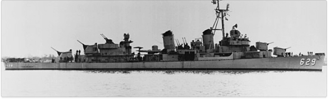

Veterans Mesothelioma Compensation Calculator
Who was Exposed To Asbestos?USS Abbot (DD-629): Verified Source of Asbestos Exposure
Compensation Requirements
Jobs Location: Miami, FL
Between: 1929 - 1986
Occupational Exposure: Yes
Diagnosis: Mesothelioma / Lung Cancer
Table of Contents
The Fletcher-class destroyer, USS Abbot (DD-629), renowned for its service from 1943 until decommissioned in 1965, may carry a legacy of asbestos exposure for many Navy veterans. Asbestos was frequently used in ship construction during this era at Bath Iron Works in Bath, ME, which laid down the USS Abbot on September 21, 1942. This highlights the importance of exploring compensation options for veterans.
Numerous USS Abbot (DD-629) asbestos product suppliers faced lawsuits, filed for bankruptcy, and created Asbestos Trust Funds for victim compensation. Identified trust fund(s) are:
The tables below represent total asbestos claims from the three (3) asbestos trust funds available to compensate navy veterans diagnosed with mesothelioma or lung cancer that served aboard USS Abbot (DD-629). These payouts are obtained from the most recent scheduled values and adjusted according to the relevant ratios*.
| Claim Type | Applied Ratio |
|---|---|
| Expedited Review | $2,098,134 |
| Expedited Review | $2,098,134 |
| Claim Type | Applied Ratio |
|---|---|
| Expedited Review | $2,098,134 |
| Individual Review | $2,549,594 |
* The trust funds ensure a fixed percentage of compensation known as a "ratio," which reserves funds for potential future victims based on the claim's worth.
Please select your job type and the time served onboard USS Abbot (DD-629). Click on “Add To Your Claim” button. By adding USS Abbot (DD-629) to your asbestos claim calculator, you can determine the financial compensation you deserve for the harm caused by asbestos exposure.
@@include('../common/job-site-card.html')The following equipment and products were implemented on board USS Abbot (DD-629). It is important to note that the manufacturers of these items may be held responsible for any potential asbestos exposure.
Trust Fund Created: YES
Equipment:Trust Fund Created: YES
Equipment:Trust Fund Created: YES
Equipment:Trust Fund Created: YES
Equipment:Trust Fund Created: YES
Equipment:If you have legal questions about mesothelioma or other asbestos-related diseases, fill out the "I have a legal question" form. You'll be connected directly with qualified mesothelioma lawyers with decades of experience.
Take advantage of a 100% free legal consultation today.